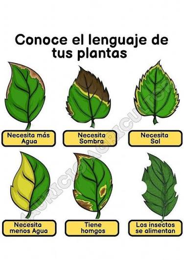
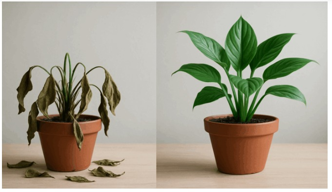
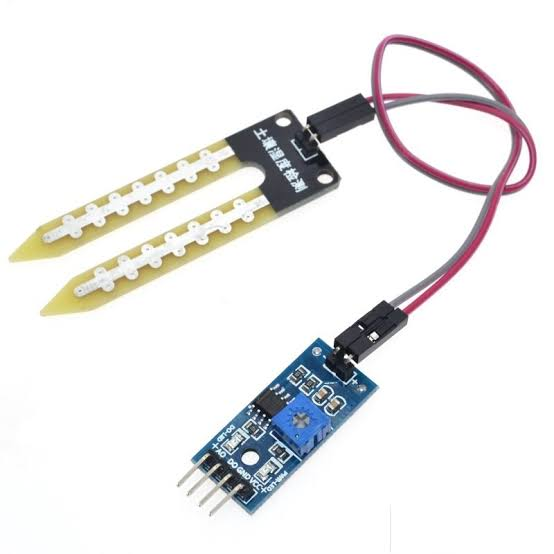
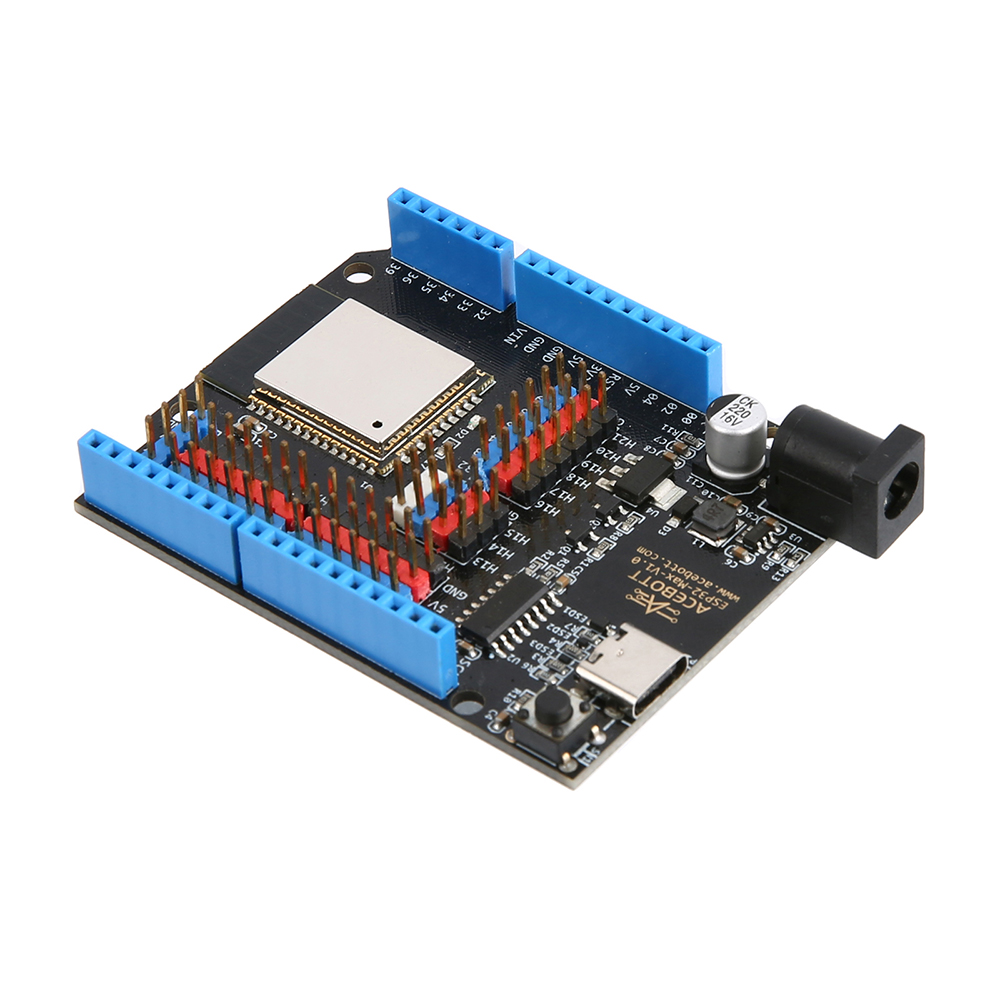
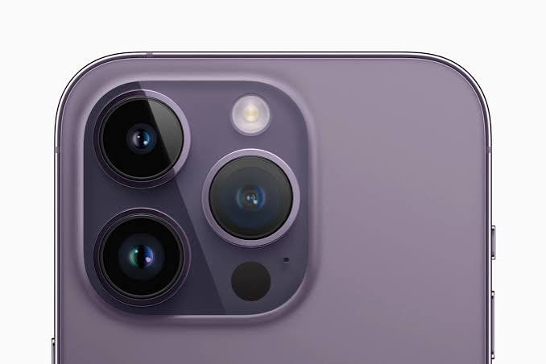
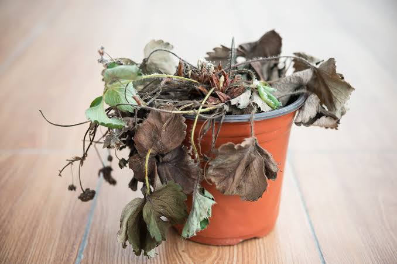
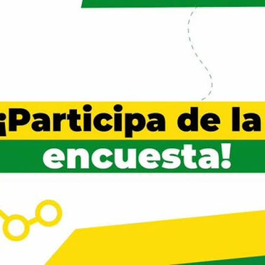
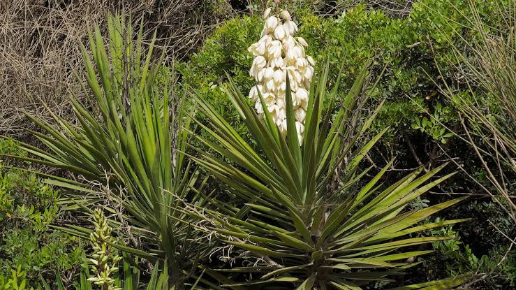

Un colegio más verde empieza por mirar bien lo que ya tenemos

Basura, plantas secas o pisoteadas y ninguna señalización de especies. Espacios que podrían darnos sombra y bienestar se están deteriorando por falta de cuidado.

San Luis + Verde indaga el estado real de las zonas verdes, analiza los datos con matemáticas y propone tecnología (sensores, apps, registros digitales) para cuidarlas todo el año.
Diagnosticar las zonas verdes del colegio y diseñar una solución tecnológica sencilla que facilite su cuidado y promueva la conciencia ambiental.
Documentación completa
Escanea para ver el PDF completo del proyecto "San Luis + Verde con el Mundo Digital".
Indagación y diagnóstico
Fotos del recorrido: lo que encontramos, clasificamos y lo que hay que mejorar.
Clasificación de las plantas
| Categoría | Característica | Cantidad y % |
|---|---|---|
| Myrtaceae – feijoa | Árbol de hojas aromáticas. | 3 — 0,39 % |
| Piperaceae | Hojas simples y flores en espigas. | 16 — 2,06 % |
| Melastomataceae | Hojas con nervaduras marcadas. | 1 — 0,13 % |
| Fabaceae | Familia de las leguminosas. | 3 — 0,39 % |
| Pinaceae – pino | Hojas en forma de aguja. | 13 — 1,68 % |
| Rubiaceae | Incluye el café. | 2 — 0,26 % |
| Solanaceae | Incluye tomate y papa. | 12 — 1,55 % |
| Rosaceae – rosa | Incluye rosas y fresas. | 10 — 1,29 % |
| Rutaceae | Familia de los cítricos. | 2 — 0,26 % |
| Asteraceae | Incluye margaritas y girasoles. | 14 — 1,81 % |
| Fabaceae – muestra 2 | Otra muestra de Fabaceae. | 2 — 0,26 % |
| Cannaceae – achira | Hojas grandes y flores vistosas. | 100 — 12,90 % |
| Mimosa (Fabaceae) | Hojas con muchos folíolos. | 3 — 0,39 % |
| Asparagaceae | Hojas largas o en roseta. | 5 — 0,65 % |
Análisis de datos
Clasificación por familia botánica: cantidad y porcentaje de cada categoría registrada.
Clasificación de las plantas
Edita una celda y actualiza la gráfica.
| Categoría | Características | Flor y fruto | Cantidad y % |
|---|---|---|---|
| 1. Myrtaceae – feijoa | Árbol o arbusto de hojas aromáticas. | Flor: sí. Fruto: sí. | 3 — 0,39 % |
| 2. Piperaceae | Hojas simples y flores en espigas. | Flor: sí. Fruto: sí. | 16 — 2,06 % |
| 3. Melastomataceae | Hojas con nervaduras marcadas. | Flor: sí. Fruto: sí. | 1 — 0,13 % |
| 4. Fabaceae – muestra 1 | Familia de las leguminosas. | Flor: sí. Fruto: vaina. | 3 — 0,39 % |
| 5. Pinaceae – pino | Hojas en forma de aguja. | Sin flores ni frutos verdaderos. | 13 — 1,68 % |
| 6. Rubiaceae | Hojas opuestas. Incluye el café. | Flor: sí. Fruto: sí. | 2 — 0,26 % |
| 7. Solanaceae | Incluye tomate, papa y pimentón. | Flor: sí. Fruto: sí. | 12 — 1,55 % |
| 8. Rosaceae – rosa | Incluye rosas, fresas y manzanas. | Flor: sí. Fruto: sí. | 10 — 1,29 % |
| 9. Rutaceae | Familia de los cítricos. | Flor: sí. Fruto: sí. | 2 — 0,26 % |
| 10. Asteraceae | Muchas flores pequeñas forman un capítulo. | Flor: sí. Fruto: sí. | 14 — 1,81 % |
| 11. Fabaceae – muestra 2 | Otra muestra de Fabaceae. | Flor: sí. Fruto: sí. | 2 — 0,26 % |
| 12. Cannaceae – achira | Hojas grandes y flores vistosas. | Flor: sí. Fruto: cápsula. | 100 — 12,90 % |
| 13. Mimosa (Fabaceae) | Hojas con muchos folíolos. | Flor: sí. Fruto: vaina. | 3 — 0,39 % |
| 14. Asparagaceae | Hojas largas o en roseta. | Flor: sí. Fruto: sí. | 5 — 0,65 % |
Soluciones tecnológicas
Hardware y software que exploramos para cuidar las zonas verdes.
Hardware

Sensor de humedad de suelo
Detecta si la tierra necesita riego.

Microcontrolador (Arduino / ESP32)
Procesa los datos y activa alertas o riego automático.

Cámara del celular
Registro fotográfico del recorrido y las plantas.
Software
Hoja de cálculo
Registra mediciones y genera las gráficas.
Google Sites
Publica esta página como bitácora del proyecto.
App de bloques (Scratch / App Inventor)
Prototipo de app o juego para cuidar las plantas.
Participa en San Luis + Verde
Escribe tu nombre y grado, responde el quiz y ayúdanos a difundir la conciencia ambiental.



Registro de participantes
Nombre, grado y puntaje de quienes han respondido.
| # | Nombre | Grado | Puntaje | Fecha |
|---|
Todavía no hay respuestas registradas.